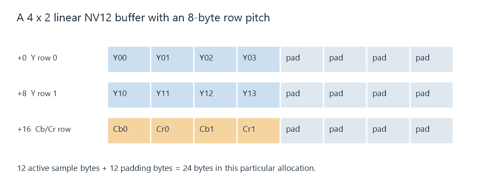

Pixel Formats and Memory Layout
A pixel format defines how decoded picture components are represented and arranged for access by a processing stage.
A video decoder's output has to be usable by the next stage. That stage needs to find the components for a picture position, determine their precision, and move from one row to another. Pixel format describes the sample representation and organization that makes this possible.
The compressed movie file has a codec and container. The decoded frame has component arrays or a hardware surface. Pixel format concerns this latter representation; its memory footprint is different from the compressed file's size.
One picture can have several byte arrangements
Consider an 8-bit 4:2:0 frame with even dimensions. Its luma samples form a full-size grid. Each color-difference component has half as many columns and rows. The same samples can be laid out in different ways:
| Arrangement | Memory regions | What lies beside what? |
|---|---|---|
| Fully planar YCbCr, such as yuv420p | Y, then separate Cb and Cr planes in a simple contiguous allocation | Neighboring samples of the same component |
| Semiplanar NV12 | Y plane and a Cb/Cr plane | Chroma appears as alternating Cb, Cr values |
| Packed RGB24 after a component conversion | A region with three component bytes per picture position | R, G, B for one position, then R, G, B for the next |
The first two rows can organize identical YCbCr values. The third row also changes the component representation, requiring the YCbCr-to-RGB calculation. A processing stage should distinguish a rearrangement of existing values from a conversion that calculates new values.
“Plane” means a region or array used for a component or component group. It need not be a separate allocation, and the generic name does not guarantee that every implementation places all planes consecutively in one block.
A twelve-byte frame, first without padding
Use a tiny 4 × 2 picture so every active sample can be counted:
- Y: four columns × two rows = eight samples.
- Cb: two columns × one row = two samples.
- Cr: two columns × one row = two samples.
At one byte per sample, that is twelve bytes. In a tightly packed planar Y–Cb–Cr allocation, offsets 0–7 hold Y, offsets 8–9 Cb, and 10–11 Cr. In a tightly packed NV12 allocation, offsets 0–7 still hold Y, while offsets 8–11 contain Cb0, Cr0, Cb1, Cr1.
Reading the NV12 chroma bytes as if they were two separate planes pairs the wrong values together. The resulting colors can be badly wrong even though the total byte count is correct.
The layout's component order matters just as much for RGB. A physically stored B, G, R sequence interpreted as R, G, B swaps red and blue. The exact format definition supplies that order; a broad label such as “32-bit RGB” is insufficient to determine every byte's role and alpha convention.
Row pitch explains the extra bytes
Stride, or row pitch, is the byte distance from the start of one row to the start of the next. It can exceed the active row width because an allocator aligns rows or reserves padding.

This deliberately small linear example has an 8-byte pitch. It is one possible allocation, not a required pitch for all four-column surfaces.
With that pitch, the two Y rows occupy sixteen bytes. A chroma row occupies another eight bytes: four active component bytes and four padding bytes. The allocation illustrated holds 24 bytes, although the active samples still need only twelve.
For a linear plane whose base pointer is B, a byte-sized sample at column x, row y is found at:
address = B + y × pitch + x.
For a two-byte sample, the horizontal term becomes 2x. For interleaved components, each stored element's size and component offset also enter the calculation. The NV12 and P010 examples work through those specific conventions.
Using active width as if it were pitch makes the second row start too early whenever padding is present. A reader then treats padding or the tail of the previous row as picture data. The defect can repeat across the frame as shifted or corrupted rows.
Some image APIs can expose negative strides for bottom-up storage. Others impose positive strides for a specific video format. The API-provided base, plane offsets, dimensions, and strides establish the accessible rows; a generic width calculation cannot replace them.
Precision is not always the storage width
The 4 × 2 frame contains twelve component samples regardless of whether they use 8-bit or 10-bit coding precision. NV12 holds each in one byte. P010 holds each in a two-byte word, with its ten meaningful bits in specified positions.
An unpadded P010 version consequently needs 24 bytes for its active sample words. The extra storage does not add picture positions. It provides a wider word for each component sample.
Names such as yuv420p10le and p010le therefore encode useful differences: both can describe 10-bit 4:2:0 values, while their plane grouping and significant-bit positions differ. A stage receiving one cannot simply rename it as the other. The values must be read and stored according to their respective layouts.
Frame size and the cost of repeated access
For a linear unpadded 1920 × 1080 NV12 frame, the active storage is:
1,920 × 1,080 × 1.5 = 3,110,400 bytes, about 2.97 MiB.
The corresponding P010 sample words occupy 6,220,800 bytes, about 5.93 MiB. Real allocations can add row padding, extra allocated height, or device-specific organization.
Now imagine a processing pass that reads every active NV12 byte and writes a same-sized output at 60 frames per second. Its simple sample-traffic budget is:
3,110,400 × 2 × 60 = 373,248,000 bytes per second.
The equivalent P010 read/write budget is twice that. Several distinct passes can repeatedly touch this data. Combining operations, reusing surfaces, or keeping suitable data on a device can reduce transfers between stages.
These totals are arithmetic for the stated hypothetical pass, not measurements of a GPU bus or an Emby session. Cache reuse, tiling, fused operations, and which memory is accessed change actual traffic. They explain why moving decoded pictures can become substantial work even when the compressed movie arrives at a modest network bitrate.
Hardware surfaces have access rules
A hardware frame may be described by a device surface rather than a CPU pointer to a simple row-major array. Its storage can be tiled, device-local, or otherwise accessible only through the relevant API. A transfer or mapping operation makes an appropriate representation available to a stage that cannot operate on that surface directly.
Hardware format and software sample format can both appear in a processing description: the first identifies the device-backed frame, while the latter describes the sample representation associated with it. Reading a reported device format as if it named an ordinary byte array omits the surface's access contract.
In an Emby conversion, compatibility between decoder output, filters, and encoder input determines where rearrangement, precision conversion, or memory transfer is needed. A pixel-format change in a log is useful evidence about that boundary. The format names, dimensions, and device context together explain the operation it requires.